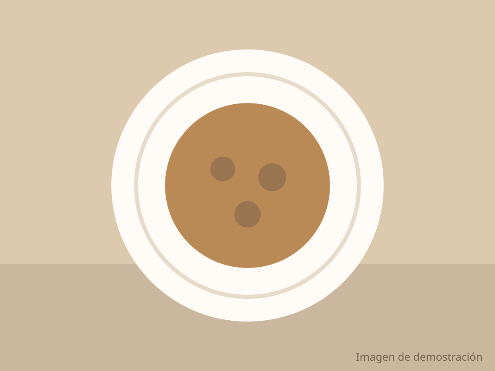

Galletas de avena
Galletas crujientes por fuera y tiernas por dentro, listas en media hora.

Ingredientes
- 150 g copos de avena
- 100 g harina de trigo
- 100 g mantequilla blanda
- 80 g azúcar moreno
- 1 huevo
- ½ cucharadita levadura química
- ¼ cucharadita sal
Preparación
Precalienta el horno a 180 °C. Bate la mantequilla con el azúcar hasta que quede cremosa.
Añade el huevo y mezcla. Incorpora la harina, la levadura, la sal y la avena.
Forma bolitas, colócalas separadas sobre una bandeja con papel de horno y aplástalas ligeramente.
Hornea de 10 a 12 minutos, hasta que los bordes estén dorados. Deja enfriar sobre una rejilla.
Consejos
- Puedes añadir pasas o trocitos de chocolate a la masa.